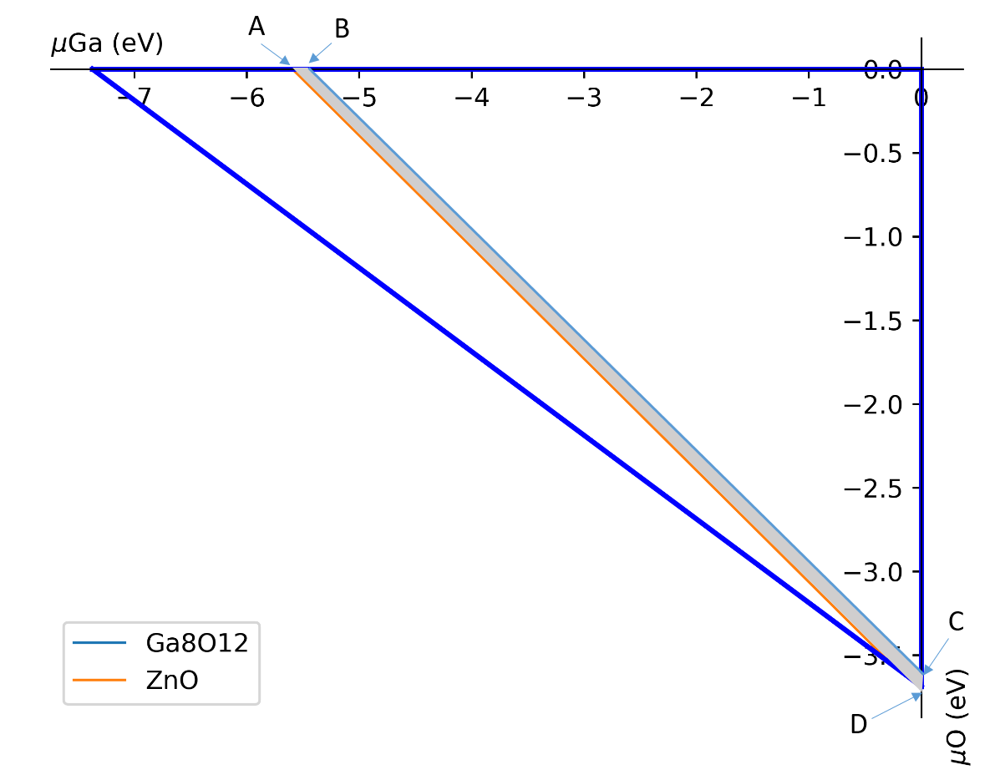
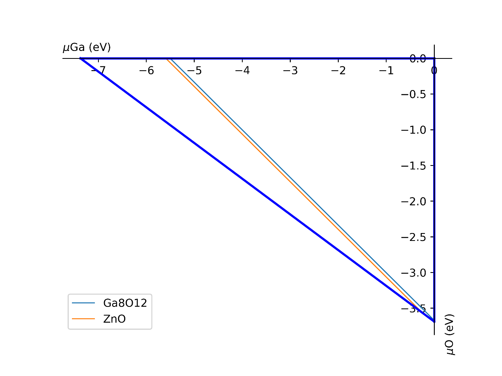

具体的例子¶
注意
bash -e shell.sh 来运行脚本计算能带, 态密度¶
下面是计算能带的例子, 相信如果你读完前面的文档应该是可以看得懂的:
#!/bin/bash
# make sure you have install pyvasp in your current environment
# make sure current directory has POSCAR
pyvasp prep_single_vasp POSCAR -a ISIF=3,job_name=stru_relax
pyvasp run_single_vasp stru_relax
pyvasp prep_single_vasp stru_relax/CONTCAR -a job_name=scf,NSW=0,LCHARG=True
pyvasp run_single_vasp scf
pyvasp prep_single_vasp scf/CONTCAR -a style=band,NSW=0,job_name=band,ICHARG=11
cp scf/CHG* band/
pyvasp run_single_vasp band
计算态密度的例子:
#!/bin/bash
# make sure you have install pyvasp in your current environment
# make sure current directory has POSCAR
pyvasp prep_single_vasp POSCAR -a ISIF=3,job_name=stru_relax
pyvasp run_single_vasp stru_relax
pyvasp prep_single_vasp stru_relax/CONTCAR -a kppa=4000,job_name=scf,NSW=0,LCHARG=True
pyvasp run_single_vasp scf
pyvasp prep_single_vasp scf/CONTCAR -a kppa=8000,ISMEAR=-5,job_name=dos,NSW=0
cp scf/CHG* dos/
pyvasp run_single_vasp dos
注解
例子:
$ bash band.sh 1>std.out 2>err.out & # for Linux user
$ nohup bash dos.sh 1>std.out 2>err.out& # for Windows user, 1后面重定向标准输出, 2后面重定向错误输出.
计算基态相图¶
这一小节实际上是说例如$A_xB_{1-x}$合金, 我们可以给出指定胞的各种不重复结构, 然后计算能量, 最后可以给出一个横轴的浓度$x$的基态相图.
pyvasp get_grd_state:
$ $ pyvasp get_grd_state --help
$ Usage: pyvasp get_grd_state [OPTIONS] <your job name> <end job number>
$
$ pyvasp get_grd_state task 100 # return the number of ground state
计算缺陷形成能¶
1.1 基础知识：¶

图片引用于：Goyal A , Gorai P , Peng H , et al. A computational framework for automation of point defect calculations[J]. Computational Materials Science, 2017, 130:1-9.
由上图可知，缺陷形成能的计算一共可以分为四个部分，即
①带缺陷、不带缺陷结构的总能的计算 （Defect and Host Supercell）
②化学势的计算 (chemical potentials from phase stability)
③电子化学势即费米能的取值 （Electro chemical potential）
④缺陷形成能的修正计算 （Finite size corrections）
1.2 公式中各个部分的简单讲解¶
1.2.1 带缺陷、不带缺陷结构的总能的计算 （Defect and Host Supercell）¶

通过以上流程便可以将超胞能量EH和缺陷能量ED,q求出。值得注意的是在不同的带电情况下可以求出不同的缺陷形成能（比如带-1、0、+1的缺陷能量，即ED,-1 、ED,0 、ED,1）
1.2.2 化学势的计算 (chemical potentials from phase stability)¶
计算不同的环境下（如富氧，贫氧环境下）的化学势。如上图所示，A、B两点为贫氧环境下各个元素的化学势（具体数值可以由程序得出），而C、D两点则是富氧环境下各个元素的化学势。
1.2.3 电子化学势即费米能的取值 （Electro chemical potential）¶
电子化学势一般选取导带、价带两点的数值，并由此确定一直线，即分别取Ef = Ecbm和Ef = Evbm两点。


1.3 具体操作方法（以单空位的Si为例子）¶
1.3.2 获取多个不等价的Si缺陷结构::¶
扩胞命令:
pyvasp get_point_defect -i Vac -o Si Si-POSCAR # generate a vacancy
（注：如果不是空位缺陷而是替换缺陷，则将Vacc换成替换原子，如Ga）
1.3.3 一步完成以下多种操作¶
①获取能量最低的结构
②计算该结构下不同电荷的能量
③计算各种修正项
提交以下任务:
#/bin/bash # relax calculation and scf calculation pyvasp prep_single_vasp -a ISIF=3,node_name=long_q,job_name=supercell pyvasp run_single_vasp supercell cd supercell pyvasp prep_single_vasp -p CONTCAR -a kppa=4000,job_name=scf,node_name=long_q,NSW=0 pyvasp run_single_vasp scf cd .. # get ground state of defect configurations pyvasp get_point_defect -i Vacc -o Si supercell/scf/CONTCAR cd Si-Vacc-1-defect i=0 for f in `ls` do mv $f POSCAR$i let i=i+1 done pyvasp prep_multi_vasp $((i-1)) -a node_name=long_q pyvasp run_multi_vasp task $((i-1)) grd_idx=`pyvasp get_grd_state task $((i-1)) ` cp task${grd_idx}/CONTCAR grd_poscar ## calculate possible charge states total_ele=`pyvasp main -a ele-free -w task0` for q in -2 -1 0 1 2 do let ele=${total_ele}-$q pyvasp prep_single_vasp -p grd_poscar -a NELECT=$ele,job_name=charge_state_$q,node_name=long_q pyvasp run_single_vasp charge_state_$q cd charge_state_$q pyvasp prep_single_vasp -p CONTCAR -a NELECT=$ele,job_name=scf,node_name=long_q,NSW=0 pyvasp run_single_vasp scf cd .. done cd .. ## calculate image correlation sed -n '1,5p' supercell/scf/POSCAR >poscar_img echo H >> poscar_img echo 1 >> poscar_img echo direct >>poscar_img echo "0.5 0.5 0.5 " >>poscar_img if [ ! -d image_corr ] then mkdir image_corr fi pyvasp prep_single_vasp -p poscar_img -a ISIF=2,job_name=image_corr,node_name=long_q rm poscar_img pyvasp run_single_vasp image_corr计算完成后可以得到以下目录结构 (重要)

1.3.4 计算最终的缺陷形成能¶
计算前必须在./Si的目录文件下提供defect-incar文件
文件内容:
epsilon=13.36 #介电常数
mu_Si = -5.41 #化学势
计算缺陷形成能:
pyvasp get_def_form_energy –help Usage: pyvasp get_def_form_energy [OPTIONS] <your data main direcroty> <your data defect calculation direcroty> pyvasp get_def_form_energy Si Si/Si-Vacc-defect
注：./Si 与Si/Si-Vacc-defect为目录结构，可参考上一步操作最后生成的目录结构。
如果该计算有多种缺陷，比如同时有空位和Ga替换Si，可用以下命令:
pyvasp get_def_form_energy Si Si/Si-Vacc-defect Si/Si-Ga-defect
查看结果
在运行完上述命令后会生成defect_formation_energy.png和defect-log.txt


1.3.5 化学势的计算 (chemical potentials from phase stability)¶
对于三组分体系，在不同环境（如贫氧和富氧）下，defect-incar中的化学势是不一样的，因此需要对此进行分析。以ZnGa2O3为例；需要提供chemical-incar文件以生成相图；
提供chemical-incar
文件内容：（以下是该元素或者化合物的总能，可以通过DFT计算获得，也可以通过查询Aflow得到):
Ga=-2.916203375
Ga8O12=-121.098
O2=-8.9573588
Zn=-2.5493
#Zn8Ga16O32=-328.32564
ZnO=-10.586057
运行以下命令:
pyvasp chem_pot -r 0 chemical-incar
得到目标相图chemical-potential.png以及chemical_log.txt
如下：
以及: